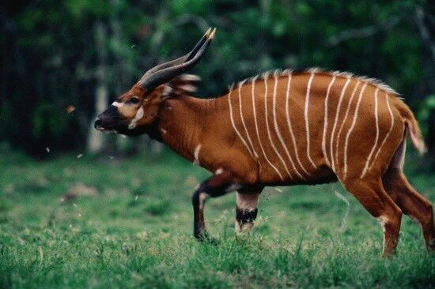

Saola
The saola (Pseudoryx nghetinhensis), also called spindlehorn, Asian unicorn, or infrequently,
Vu Quang bovid, is one of the world's rarest large mammals, a forest-dwelling bovine native to
the Annamite Range in Vietnam and Laos.

Fun Facts About Saola
>
-
The Saola is also called the Asian Unicorn.
-
Sometimes the Saola is called a spindle-horn. This is because its horns look like the
spinning wheels of the villagers vehicles.
-
Sometimes the Saola is called the Quang Vu ox. They live only in the Quang Vu Nature Reserve.
index.html